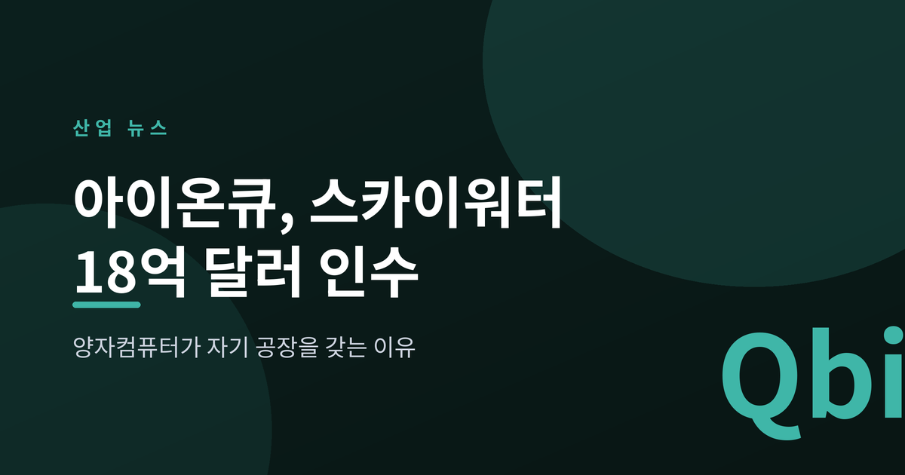
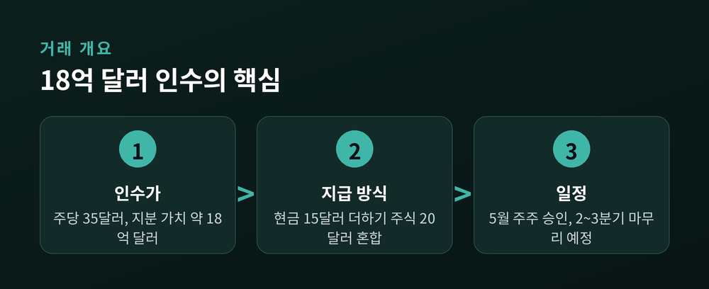
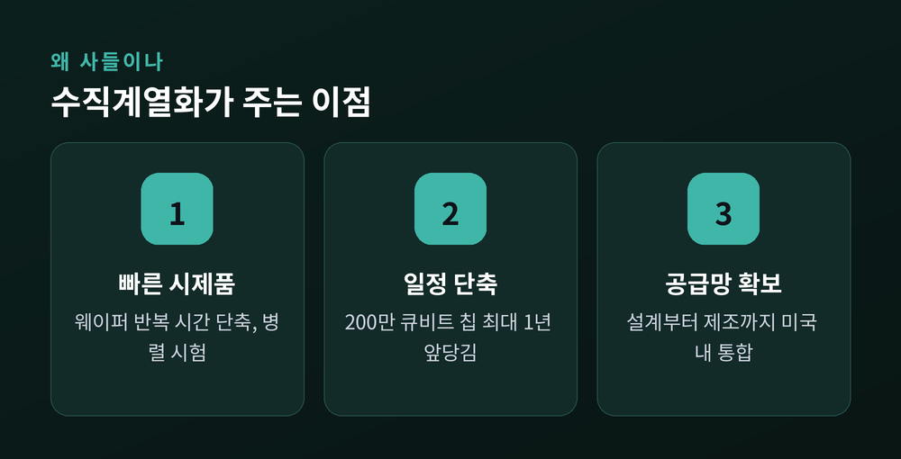
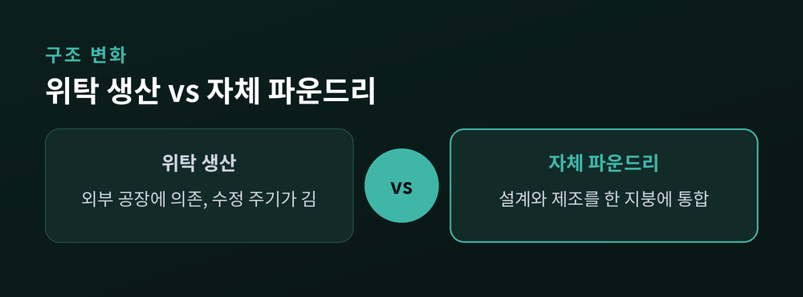

양자컴퓨터가 자기 공장을 갖는 이유

이번 글에서는 양자컴퓨팅 기업 아이온큐(IonQ)가 미국 반도체 파운드리 스카이워터(SkyWater)를 약 18억 달러에 인수하기로 한 소식을 정리해 보겠습니다. 설계 중심 기업이 제조 공장을 사들이는 이 결정이 무엇을 뜻하는지, 왜 지금 나왔는지 살펴봅니다.
아이온큐는 스카이워터를 주당 35달러에 인수하기로 했습니다. 현금 15달러와 아이온큐 주식 20달러를 섞은 방식입니다. 전체 지분 가치는 약 18억 달러에 이릅니다.
이 가격은 발표 직전 30일 거래량 가중평균가 대비 약 38% 높은 수준입니다. 스카이워터 주주들은 2026년 5월 합병안을 승인했습니다. 거래는 반독점 심사 등을 거쳐 2026년 2~3분기 안에 마무리될 전망입니다.
스카이워터는 미국에 기반을 둔 파운드리입니다. 국방·항공 분야에 칩을 공급하는 신뢰 등급 시설을 갖추고 있습니다. 인수 뒤에도 기존 이름과 경영진을 유지한 채 아이온큐의 자회사로 운영됩니다.

양자컴퓨터의 심장은 특수하게 제작한 칩입니다. 문제는 이 칩을 원하는 대로 빠르게 만들어 줄 곳이 많지 않다는 점입니다.
예전엔 설계도를 외부 공장에 맡기고 결과물을 기다렸습니다. 시제품 하나를 고치는 데도 오랜 시간이 걸렸습니다. 지금은 그 공장을 아예 품 안에 두려 합니다. 웨이퍼를 반복해 다듬는 시간을 줄이고, 여러 시제품을 동시에 시험하겠다는 계산입니다.
아이온큐는 이 인수로 200만 큐비트 칩 설계 일정을 최대 1년 앞당길 수 있다고 밝혔습니다. 큐비트는 양자컴퓨터의 연산 단위입니다. 개수가 많을수록 다룰 수 있는 문제도 커집니다.

이번 거래에는 기술 외의 계산도 깔려 있습니다. 스카이워터는 미국 국방 관련 조달에 쓰이는 신뢰 파운드리로 분류됩니다.
미국은 첨단 칩 제조를 국내에 두는 흐름을 강화하고 있습니다. 아이온큐는 설계부터 패키징, 제조까지 미국 안에서 잇는 공급망을 확보하게 됩니다. 이는 국방부 관련 사업으로 발을 넓히는 발판이 됩니다.
즉 이번 인수는 단순한 속도 경쟁이 아닙니다. 기술 자립과 안보라는 두 축이 맞물려 있습니다.

밝은 면은 분명합니다. 설계와 제조가 한 지붕 아래 모이면 실험 주기가 짧아집니다. 공급망이 흔들릴 위험도 줄어듭니다.
다만 신중히 볼 대목도 있습니다. 양자컴퓨터는 아직 상용 시장이 좁습니다. 파운드리 운영에는 큰 고정비가 듭니다. 매출이 뒷받침되지 않으면 공장은 무거운 짐이 될 수 있습니다. 주식을 섞은 대가 지불 방식도 아이온큐 주가에 따라 셈법이 달라집니다.
기술의 약속과 사업의 현실은 다른 문제입니다. 이 격차를 메우는 일이 앞으로의 과제입니다.
정리하면, 아이온큐는 미래의 칩을 자기 손으로 빚기 위해 지금의 공장을 샀습니다. 속도와 안보를 함께 노린 결정입니다.
— 기술의 승부는 결국 만들 수 있느냐에서 갈립니다.
설계도만으로는 아무것도 켜지지 않습니다.